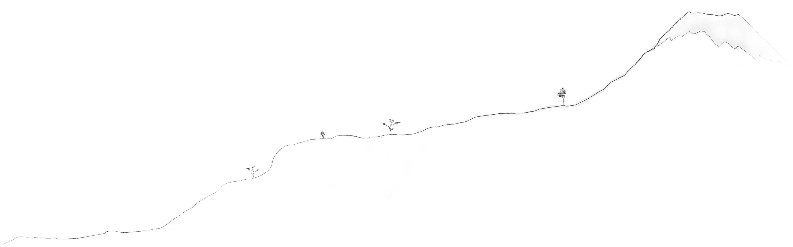
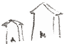
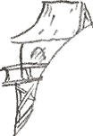
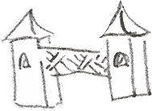
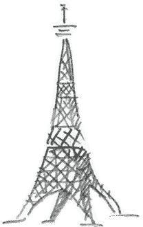

Single-family Homes
Fishing Huts
Temples & Pagodas
Radio Towers
Palace Gates
And so much more...

A tour of our specialties with
Scroll horizontally to see the O. G. Kaiju demonstrate a few of the things we can destroy for you.
Godzilla walk sequence by RoFlo-Felorez